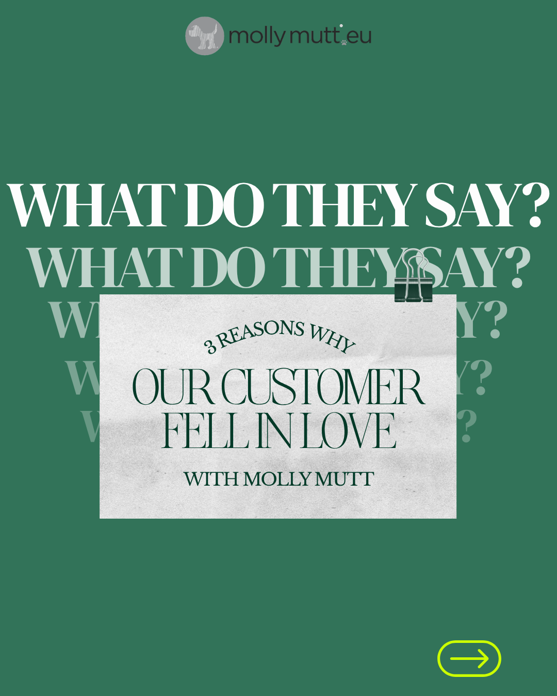
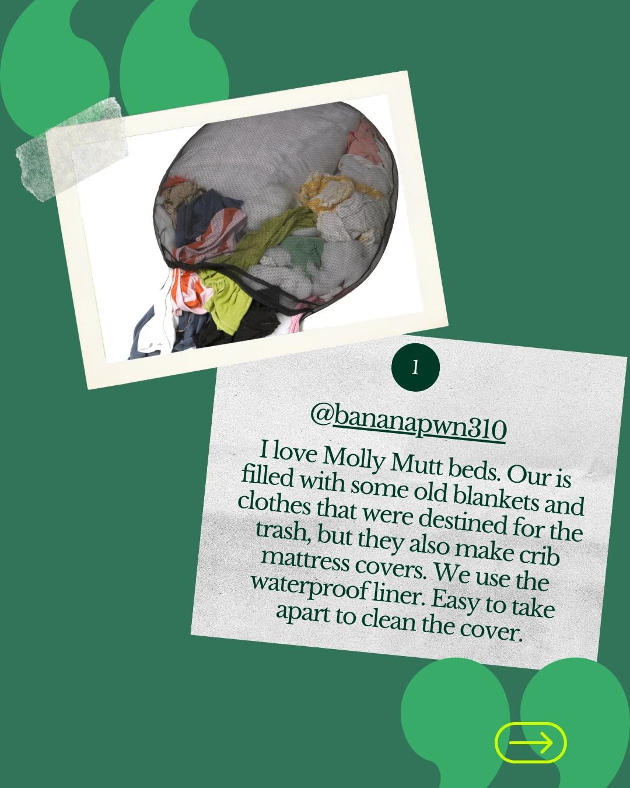
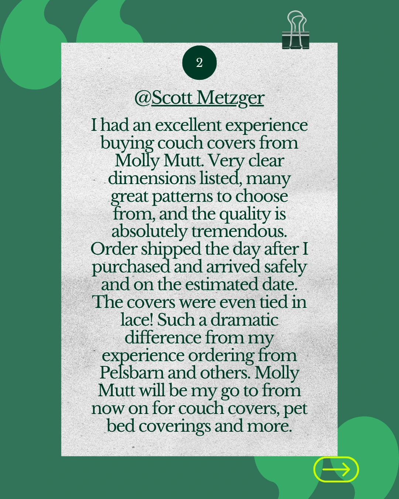
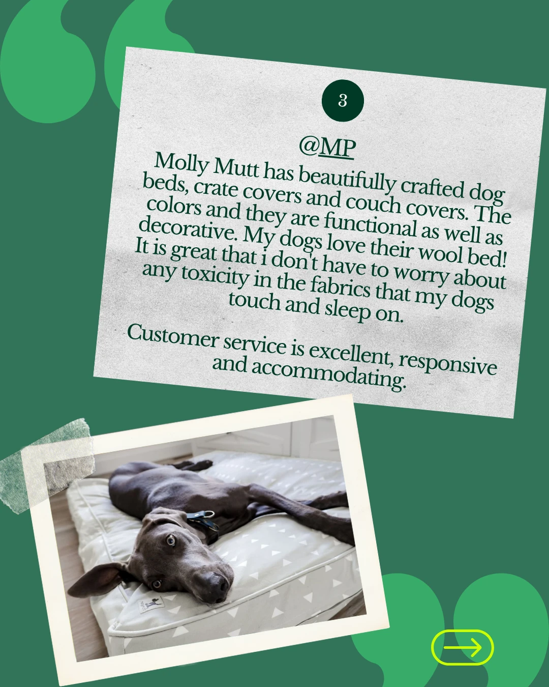
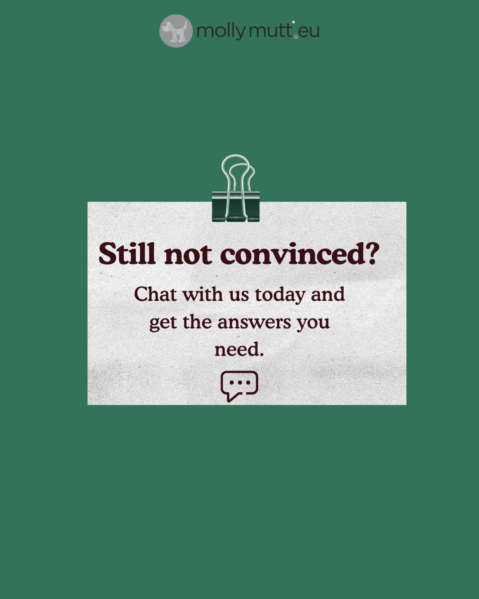

Creative assets
Reusable social content for a one-person dog bed brand: AI Reels from one product photo and Canva templates that turn customer reviews into posts.
Asset 1 · AI video
AI Reels from one product photo
The brand has good product photos but no budget for video shoots. I turned one real product photo into short clips, so the owner can post Reels without filming.
- Start from a real photo so the bed cover's pattern and shape stay true to the product.
- Write the prompts with Claude: subject, setting, light and camera move.
- Generate 10-second clips in Google Flow and keep the ones closest to the photo.
- Edit the Reel in Canva: order, cuts and text.
AI use: clips generated with Google Flow; prompts written with Claude.
The three clips and their prompts
Show prompt
Patterned cotton dog bed on a wooden floor. Dust motes drift slowly through the air. Bright living room with a potted plant and stacked books softly visible in the background. Natural daylight from the right, soft and even, no harsh shadows. Slow lateral pan from left to right. Cinematic, lifestyle photography aesthetic.
Show prompt
Patterned cotton dog bed cover in the foreground. Sunlight shifts slowly across the fabric texture. Minimalist home interior, warm wooden shelf softly out of focus in the background. Soft diffused afternoon light from the left in warm golden tones. Slow dolly push-in toward the fabric. Cinematic, shallow depth of field.
Show prompt
A woman in her 30s in a white linen shirt kneels on a wooden floor. She presses folded textiles into an open patterned cotton canvas cover. A medium-sized dog sits upright beside her, watching attentively. Warm, uncluttered living room. Soft natural light from a window on the left in warm white tones. Static medium shot. Warm lifestyle documentary, natural colours.
Asset 2 · Canva templates
Customer review templates
Customer reviews are the brand's strongest proof, but turning one into a post takes time. These Canva templates let the owner paste in a review and publish it in minutes, in all three formats.







AI use: none. Designed in Canva.